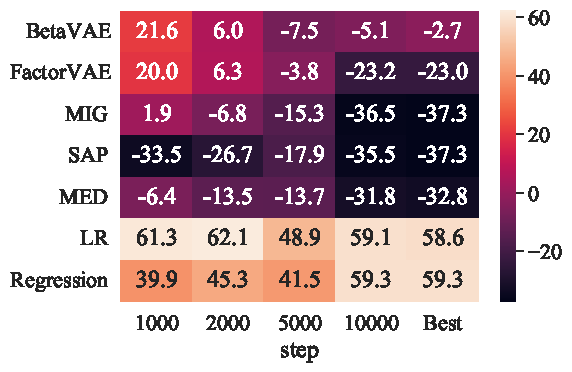

|
Ruiqian Nai 佴瑞乾 I am a third-year PhD student at the Institute for Interdisciplinary Information Sciences, Tsinghua University, advised by Prof. Yang Gao. Previously, I earned my B.S. degree from the Department of Automation, Tsinghua University. My research focuses on advancing embodied intelligence—enabling robots to perceive, reason, and learn through cutting-edge machine learning technologies. I believe that the pursuit of embodied intelligence involves a cycle of understanding, reasoning, and reinforcement learning. Agents first acquire knowledge from data, make decisions based on this knowledge, and continuously improve through their own experiences. |

|
Selected Publications (* indicates equal contribution) |
|
Fanqi Lin*, Ruiqian Nai*, Yingdong Hu*, Jiacheng You, Junming Zhao, Yang Gao Preprint, 2025 project page / arXiv / code / X summary We introduce OneTwoVLA, a single unified vision-language-action model capable of both acting (System One)⚡ and reasoning (System Two)🤔. Importantly, it adaptively determines when to engage each mode. |
|
|
HuB: Learning Extreme Humanoid Balance
Tong Zhang*, Boyuan Zheng*, Ruiqian Nai, Yingdong Hu, Yen-Jen Wang, Geng Chen, Fanqi Lin, Jiongye Li, Chuye Hong, Koushil Sreenath, Yang Gao Preprint, 2025 project page / arXiv / X summary We propose HuB (Humanoid Balance) 🤖, a framework that enables humanoids to perform challenging quasi-static balance tasks ⚖️, including extreme single-legged poses 🦵 such as the Swallow Balance 🕊️ and Bruce Lee's Kick 🦶🥋. |
|
|
Ruiqian Nai, Jiacheng You, Liu Cao, Hanchen Cui, Shiyuan Zhang, Huazhe Xu, Yang Gao ICRA 2025 project page / arXiv / X summary Better locomotion using real-world data. Our approach achieves a 24-28% net reduction in power consumption 🔋. |
|
|  |
Ruiqian Nai, Zixin Wen, Ji Li, Yuanzhi Li, Yang Gao AAAI 2024 arxiv / code We show that informativeness 🧠 is a more crucial factor than disentanglement 🌀 in downstream tasks. |
|
Modified from Jon Barron's website. |